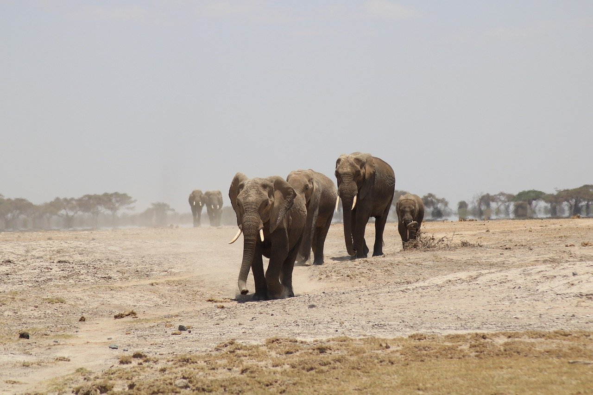

Gallery



At Jungle Trails, you’ll explore a fascinating world of wildlife, with animals
from
around the globe
living in beautifully designed habitats. Experience up-close encounters with majestic lions, playful
monkeys, and vibrant birds. Our interactive experiences, including feeding sessions and guided tours,
bring you closer to nature.
We're dedicated to conservation, helping protect endangered species and their natural environments
while offering educational programs for all ages.
Plan your visit and enjoy a fun, educational day surrounded by nature. Don’t forget to check our
calendar for special events and activities.
Welcome to Jungle Trails, a wildlife sanctuary dedicated to inspiring a deeper connection with nature. Founded in 1867, we began with a small vision that has since blossomed into a renowned destination, home to a diverse range of animals from around the world.
At Jungle Trails, we are committed to conservation and education. Our goal is to offer visitors a chance to learn about wildlife, their ecosystems, and how to protect endangered species. We aim to promote awareness and help preserve the natural world for future generations.
As you explore Jungle Trails, you’ll wander through naturalistic habitats that recreate the animals' real environments. Enjoy close encounters with wildlife, participate in engaging educational programs, and engage in family-friendly activities like guided tours and feeding sessions.
Join us at Jungle Trails for an unforgettable experience that connects you with the wonders of the animal kingdom.
| Day | Opening Time | Closing Time |
|---|---|---|
| Monday | 9:00 AM | 6:00 PM |
| Tuesday | 9:00 AM | 6:00 PM |
| Wednesday | 9:00 AM | 6:00 PM |
| Thursday | 9:00 AM | 6:00 PM |
| Friday | 9:00 AM | 6:00 PM |
| Saturday | 9:00 AM | 7:00 PM |
| Sunday | 9:00 AM | 7:00 PM |
Jungle Trails is open daily from 9:00 AM to 6:00 PM. Please check our website for any seasonal changes or special event hours.
While tickets can be purchased at the entrance, we recommend buying them online in advance to avoid long wait times and ensure entry during peak periods.
Most interactive experiences are suitable for all ages, but some may have specific age or height restrictions for safety. Please check individual activity details on our website.
Outside food and beverages are not allowed in Jungle Trails, but there are several dining options available within the park offering a variety of meals and snacks.
Yes, Jungle Trails is committed to providing an inclusive experience. The park features accessible pathways, restrooms, and facilities to accommodate guests with disabilities.